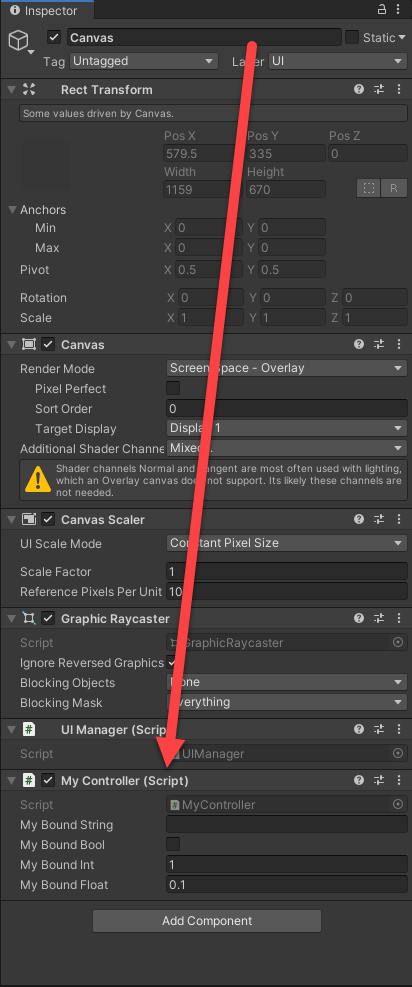
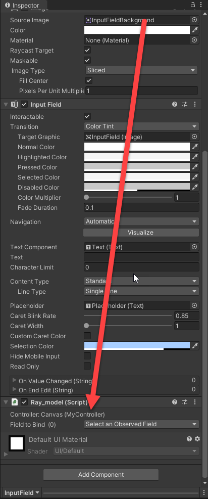
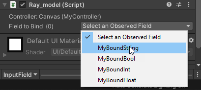
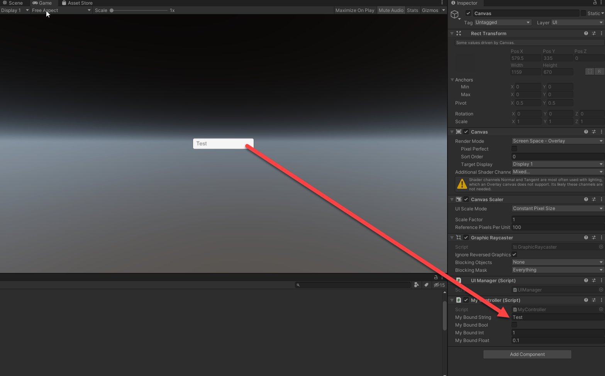
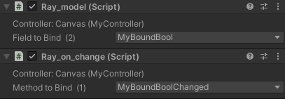
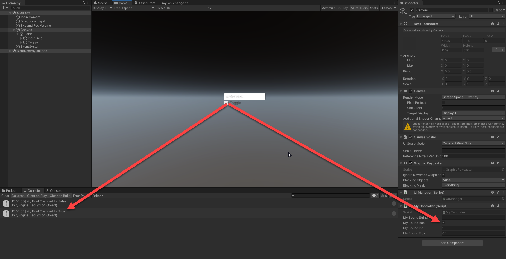

Controllers
What is a "Controller"?
A controller in RAYUI is just a C# script that inherits from RaycastGames.Controller this file is then read by the modifiers to present you with options to bind your UI widgets to. It also handles any clicked or changed callbacks, all bound variables are Two-Way Bound.
Example
I'm going to show you an example controller first so you can see just how easy it is to write a Controller in RAYUI.
using UnityEngine;
using RaycastGames;
namespace MyGame {
public class MyController : Controller {
public string MyBoundString = "";
public bool MyBoundBool = false;
public int MyBoundInt = 1;
public float MyBoundFloat = 0.1f;
public void MyBoundBoolChanged() {
Debug.Log("My Bool Changed to: " + this.MyBoundBool);
}
public void MyButtonClicked() {
Debug.Log("Button Clicked");
}
}
}
Adding a controller to your UI
Controllers are powerful! A Controller holds your bound variables and also handles your events from your UI. To add a controller to your UI simply add UIManager as a component to your base canvas entity and then choose where your controller should be. Your controller must be a parent of the UI you want to bind, the modifiers will traverse up and use the first controller they find. This allows you to have multiple controllers in your UI, for our current purposes we are going to apply our MyController Controller to our canvas to act as our base controller. But nothing is stopping us from creating a window UI element, and then putting a controller on the Window element. This would allow you to do things like have your base controller show/hide your inventory window, player equipment window, etc... Then have a sepparate controller for the inventory window functionality.

Binding
What is "Binding" and what does "Two-Way binding" even mean?
Let's look at a simple example. Let's say you had a TextBox (known as a InputField in Unity) and you wanted to bind it to MyBoundString on our controller. We would use a Ray_model to do this, which you would simply add as a component to your InputField. The Ray_Model will automatically traverse up and use the first Controller it can find, in our case it's on our canvas.
(the images will be smaller after this one, I promise)

Ok, we see that it's using the MyController script attached to the canvas. Perfect! This is what we expected/wanted, next let's tell it what field we want to observe.


Awesome, we see that our Ray_model is using the right Controller and is bound to the correct field. Let's click on Canvas scroll down to our Controller and watch as we type into our input field.
(Ok, I lied, this image is HUGE)

You can see that when we type into our input field, the field MyBoundString reflects the changes on our MyController component. If you modify the field in the inspector watch the input field and you will see the input field will also change this is why it's known as Two-Way-Binding I'll show you just one of the useful ways to use this in the examples section. If you want a challenge, add a text widget above the input, bound it to MyBoundString with a Ray_Model and you'll see that it changes as you type. You'll be able to see the performance of the binding system this way as well.
First though, let's work with our on-changed events. Add a toggle to our canvas and Ray_model bind it to MyBoundBool then add a Ray_on_change component to your input field and set the binding method to MyBoundBoolChanged this method could be named anything but I kept the names as close to the bounded fields as possible to make it easier to understand.

Click our canvas element scroll down to our MyController component and run the game, we see that our toggle becomes unchecked immediately. When we check the toggle you'll see that the controller field MyBoundBool updates to checked and then we see in our console "My Bool Changed to: True"

The changed event execution is delayed by 10 milliseconds to allow the binding updates to take place first. This does not spawn another thread nor does it delay the exectuion of our other game functions so it's safe to use during heavy computations.